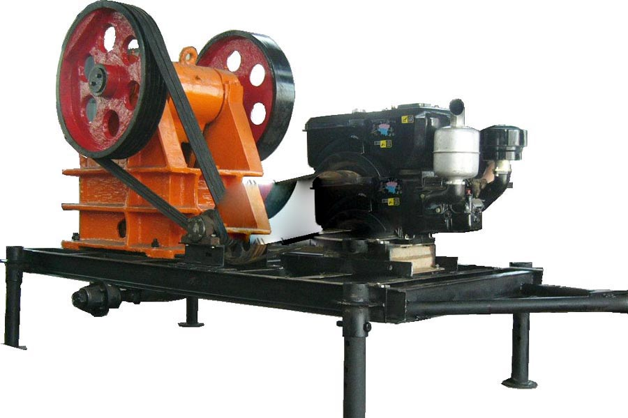

Construction waste crushing production line

Mobile construction waste crushing station for urban construction waste crushing.
germany stone crusher machine
germany stone crusher machine. Diesel driven crusher, crusher, jaw crusher, diesel driven crusher Description: jaw crusher Description: Jaw Crusher Jaw Crusher (also known as the tiger population) appeared in 1858, the first widely used in road construction engineering, later used in mining. Jaw crusher.
Diesel coal crusher, crusher manufacturers, production of the crusher according to the power mode is divided into: two kinds of diesel power and motor power. Highest compressive strength of the material to be broken is. Features: crushing ratio, uniform particle size.

Diesel Engine Crusher
Diesel engine crusher is mainly used in some place that don’t have enough electricity or without electricity. They can do the middle or fine crushing for every kind of rocks and stones. The diesel engine crusher is in compact structure, easy usage and simple operation. We also can do portable (mobile) ones as clients’ request.Jaw crusher is one of the most widely used crushing equipment in mining industry. It features simple structure, easy maintenance, stable performance, even final particles and high crushing ratio.
Tanzania diesel engine stone crusher price. Impact Crusher is a new product that absorbs advanced technologies at home and abroad. Impact crusher is suitable for materials whose compressive strength is under 360Mpa, and particle size is under 500mm.The company impact crusher features easy maintenance, high crushing ratio and crushing efficiency etc. With end products in cubic shape, impact crushers are the ideal crusher for aggregates processing in high-type highway building, water conservancy and power construction.
HPC series hydraulic cone crusher designed by our company is a new type of cone crusher with international advanced level which brings in Germanic technology. Our hydraulic cone crusher greatly increases the production capacity, crushing efficiency and is suitable for replacing spring cone crusher and common hydraulic cone crusher in the mining and construction industry. HPC series hydraulic cone crusher and is the most ideal equipment for large-scale stone factory and mining crusher.
Tanzania diesel engine stone crusher for sale. Crawler type mobile crushing & screening plant, we called this mobile crusher “hydraulic-driven track mobile crusher plant” also. This mobile crusher is Cathay newest mobile crushing and screening plant designed and researched by our experienced engineers according to the customers’ requirement, which is fully driven by hydraulic force and moves by chassis track.
Diesel crusher supplier, diesel crusher manufacturers, CAG mill specializing in the production equipment, products include: metal grinder, cans crusher, scrap shredder, scrap crushing.
Tanzania diesel engine stone crusher supplier. Mobile diesel-powered crusher, CAG Mining Machinery Co., Ltd. to provide you with: supply of mobile diesel-powered crusher crusher, mobile crusher supply diesel drive crusher specification, wholesale supply of mobile diesel-powered crusher crusher supply crusher.
Leave Me A Message, Now
If you have any questions regarding equipment prices, production line configuration or other problems, you can send a message to us, we will contact you soon.